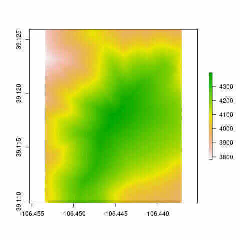
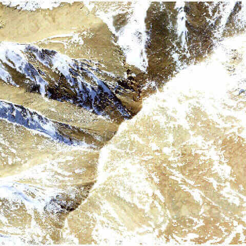
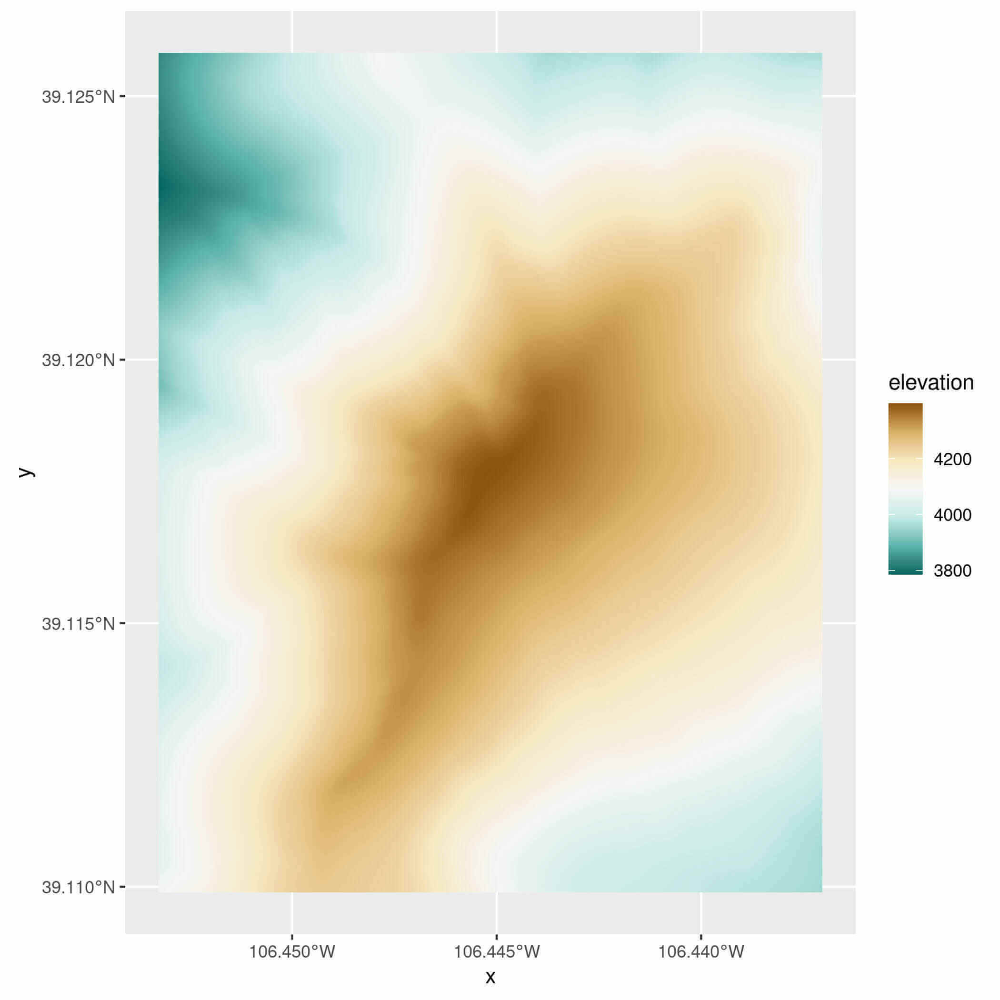
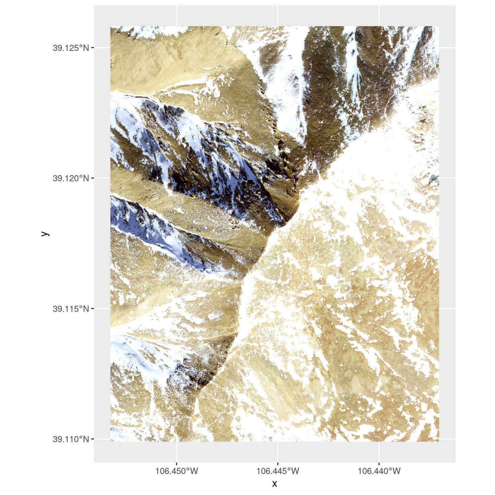
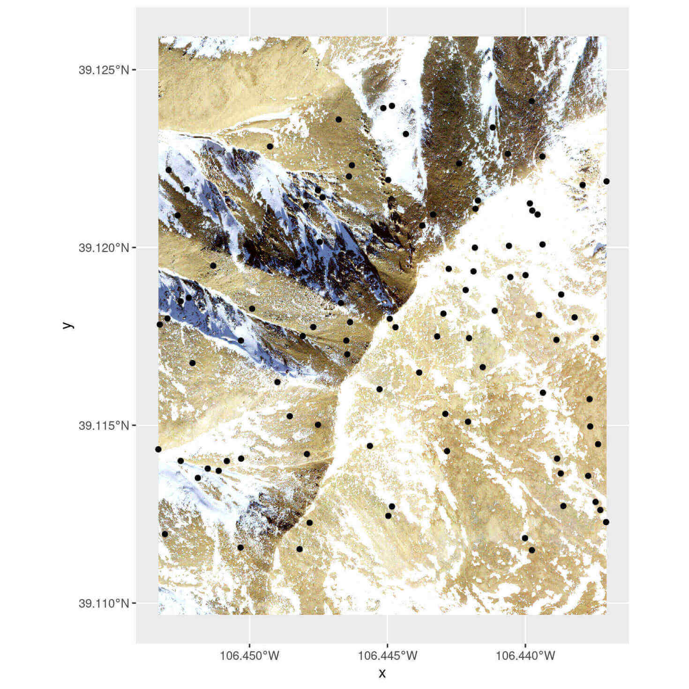
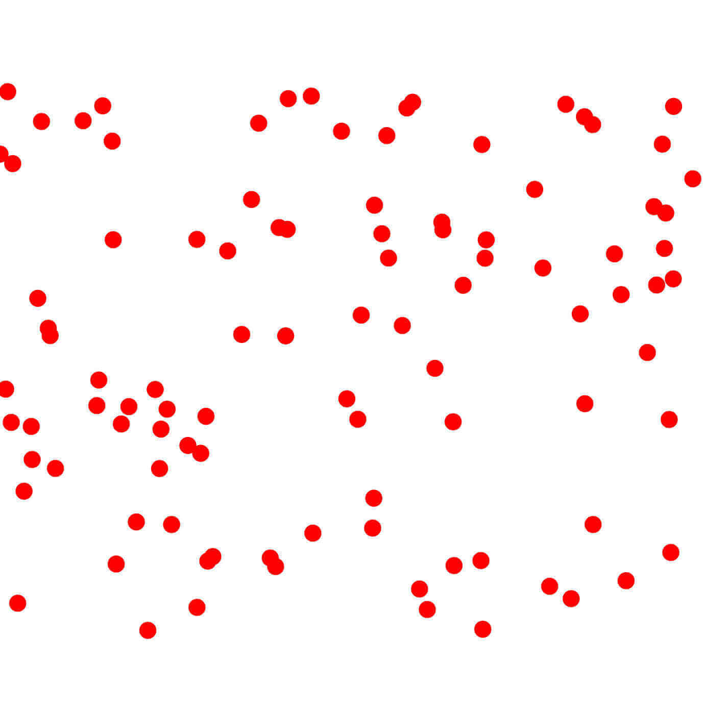
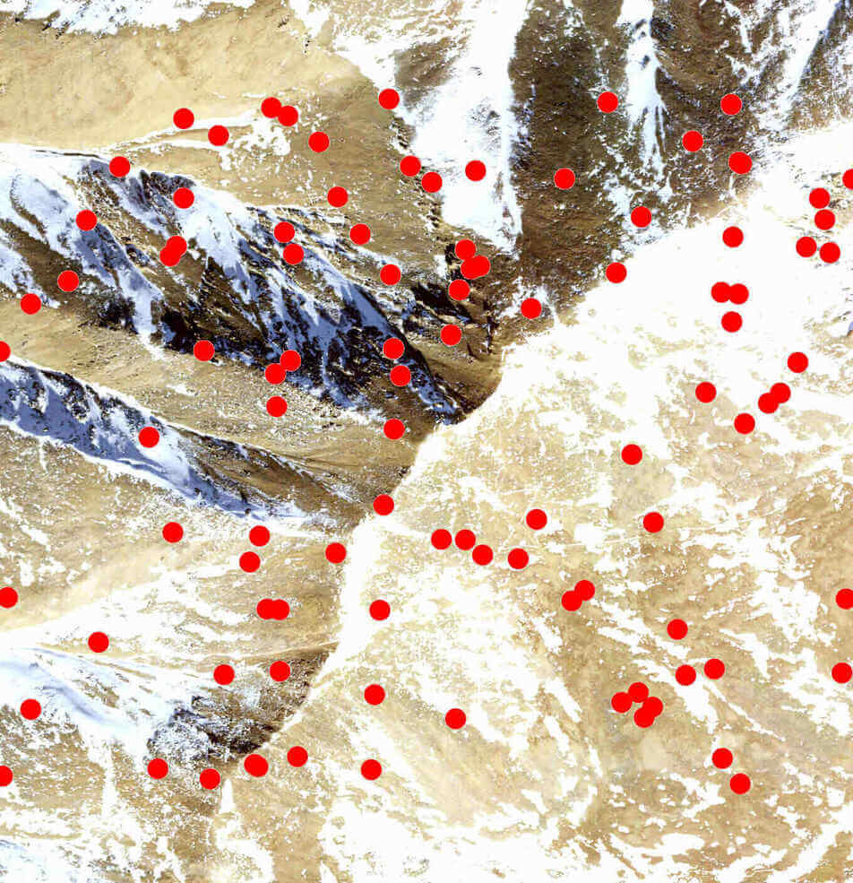
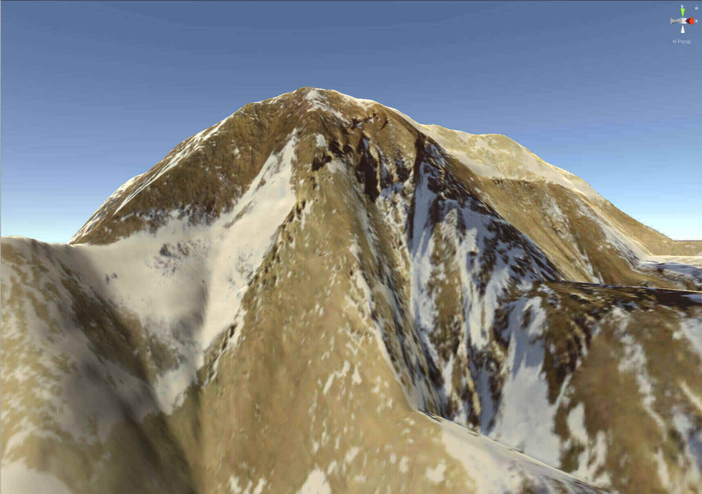

The goal of the terrainr package is to make it easier to visualize landscapes, both by providing functions to download elevation data and base maps from the USGS National Map and by adding utilities to manipulate base maps for use in visualizations using ggplot2 or the freely available Unity 3D rendering engine. This vignette will walk through the core functions available in terrainr and how they interact.
Let’s load the terrainr package to get started:
We’re going to work with data for Mount Elbert today, the highest point in the Rocky Mountain range. I’m just choosing this location for the dramatic scenery; the National Map can be used to retrieve data for the entire United States and much of Canada. Let’s simulate some data for the area right around Mt. Elbert, such as the point data we might get from some field collection:
mt_elbert_points <- data.frame(
lat = runif(100, min = 39.11144, max = 39.12416),
lng = runif(100, min = -106.4534, max = -106.437)
)terrainr is built to play nicely with functions from the sf and raster packages. In order to get our simulated points into the right format, we need to use the st_as_sf function from the sf package:
mt_elbert_points <- sf::st_as_sf(mt_elbert_points,
coords = c("lng", "lat"))
mt_elbert_points <- sf::st_set_crs(mt_elbert_points, 4326)Now that we’ve got our data in the right format, it’s time to retrieve our data. terrainr currently supports downloading DEMs from the USGS 3D Elevation Program as well as orthoimages from the National Agricultural Imagery Program, in addition to other base map images from the National Map. These programs each have slightly different APIs and different restrictions on file types and the size of image you can download at once. Rather than make you think about this, terrainr handles all the edges of making API requests for you, including splitting your request into tiles and formatting the query.
For this vignette, we’ll retrieve both elevation and orthoimagery using the get_tiles function. We can either use the generic “elevation” and “ortho” shorthands to get our data, or we can specify “3DEPElevation” and “USGSNAIPPlus” to make sure we’re using the same specific service – the short codes aren’t guaranteed to download data from the same service between releases!
One last note – all the longer-running terrainr functions can print out progress bars, if the user requests them via the progressr package. We’ll demonstrate that syntax here:
library(progressr)
handlers("progress")
with_progress(
output_files <- get_tiles(mt_elbert_points,
output_prefix = tempfile(),
services = c("elevation", "ortho"))
)And just like that, we have our data tiles! To make multi-step processing easier, terrainr functions which deal with these tiles typically return lists of the file paths they saved your data to.
output_files#> $elevation
#> [1] "/tmp/RtmphTFQvZ/file65e5d859e628_3DEPElevation_1_1.tif"
#>
#> $ortho
#> [1] "/tmp/RtmphTFQvZ/file65e5d859e628_USGSNAIPPlus_1_1.tif"If we were requesting more data than we can download at once, each element of the list would be a character vector containing the file paths for all of our downloaded tiles. Since we’re sticking with a relatively small area for this example, we only have one tile for each service.
As a quick aside, note that you can control where these files save to via the output_prefix argument (which appends the suffix servicename_xindex_yindex.tif to each tile it downloads) – you don’t need to save them to a temporary directory (and redownload every time you launch R) as we’re doing here!
If all you want is to access these endpoints to download data, this is probably the only terrainr function you’ll need – the files produced by this function can be processed just like any other spatial data:
raster::plot(raster::raster(output_files[[1]]))
raster::plotRGB(raster::brick(output_files[[2]]), scale = 1)
In addition to the regular methods for plotting rasters in R, terrainr makes it a bit easier to use ggplot2 for plotting the data returned by get_tiles. Plotting single-band rasters, like our elevation file, is already well-supported in base ggplot2:
library(ggplot2)
elevation_raster <- raster::raster(output_files[[1]])
elevation_df <- as.data.frame(elevation_raster, xy = TRUE)
elevation_df <- setNames(elevation_df, c("x", "y", "elevation"))
ggplot() +
geom_raster(data = elevation_df, aes(x = x, y = y, fill = elevation)) +
scale_fill_distiller(palette = "BrBG") +
coord_sf(crs = 4326)
terrainr adds the ability to plot using multi-band RGB rasters, like the tiles downloaded for non-elevation endpoints, using the new geom_spatial_rgb function (or its partner, stat_spatial_rgb):
ortho_raster <- raster::stack(output_files[[2]])
ortho_df <- as.data.frame(ortho_raster, xy = TRUE)
ortho_df <- setNames(ortho_df, c("x", "y", "red", "green", "blue", "alpha"))
ggplot() +
geom_spatial_rgb(data = ortho_df,
# Required aesthetics r/g/b specify color bands:
aes(x = x, y = y, r = red, g = green, b = blue)) +
coord_sf(crs = 4326)
knitr::include_graphics("ortho_ggplot.jpg")
Note that geom_spatial_rgb is a little different from other ggplot2 geoms in that it can also accept RasterStack objects directly:
ggplot() +
geom_spatial_rgb(data = ortho_raster,
aes(x = x, y = y, r = red, g = green, b = blue)) +
coord_sf(crs = 4326)Or length 1 character vectors with a path to a file that can be read by raster::stack:
ggplot() +
geom_spatial_rgb(data = output_files[[2]],
aes(x = x, y = y, r = red, g = green, b = blue)) +
coord_sf(crs = 4326)You can then use these multi-band rasters as base maps for further plotting as desired.
ggplot() +
geom_spatial_rgb(data = output_files[[2]],
aes(x = x, y = y, r = red, g = green, b = blue)) +
geom_sf(data = mt_elbert_points)
In case you find this visualization falls a little bit flat, terrainr also provides the ability to bring your landscapes into Unity to visualize in 3D. Our first step in this process is going to be replicating our image of base-map-plus-field-sites (above) in a format that we can import into Unity directly. First, we’ll need to use the vector_to_overlay function to create an image overlay from our point data:
mt_elbert_overlay <- vector_to_overlay(mt_elbert_points,
output_files[[2]],
size = 15,
color = "red")
knitr::include_graphics(mt_elbert_overlay)
Note that vector_to_overlay can be used with any sf object, not just point data.
These overlays may be stacked on top of one another or downloaded imagery using the combine_overlays function:
ortho_with_points <- combine_overlays(
# Overlays are stacked in order, with the first file specified on the bottom
output_files[[2]],
mt_elbert_overlay,
output_file = tempfile(fileext = ".png")
)
knitr::include_graphics(ortho_with_points)
Unfortunately, this image processing strips the georeferencing on the image. We can restore the original georeferencing via the georeference_overlay function:
georef_overlay <- georeference_overlay(
ortho_with_points,
output_files[[2]]
)We’ve been working so far with a single tile, but Unity is able to handle much, much larger rasters than we would normally work with in R. In order to create overlays for these larger rasters, it’s usually best to create an overlay for smaller image tiles which can then be joined back together with merge_rasters:
tile_overlays <- lapply(output_files[[2]],
function(x) vector_to_overlay(mt_elbert_points,
x,
size = 15,
color = "red",
na.rm = TRUE))
combined_tiles <- mapply(function(x, y) {
combine_overlays(x, y, output_file = tempfile(fileext = ".png"))
},
output_files[[2]],
tile_overlays)
georef_tiles <- mapply(georeference_overlay, combined_tiles, output_files[[2]])
merged_tiles <- merge_rasters(georef_tiles)Of course, since we’re only working with a single tile, georef_tiles is identical to merged_tiles. But when working with larger areas, merged_tiles is particularly useful for joining the separate tiles downloaded by get_tiles into a single raster file.
In particular, having a single joined raster is necessary for the function make_manifest, which is designed to turn these larger rasters into tiles in a format that can be imported into the Unity 3D rendering engine. You can find more information about that process in the Unity vignette.
elevation_tile <- output_files[[1]]
make_manifest(elevation_tile, georef_tiles)After that function runs, it’s a matter of minutes to create beautiful – and fully physically-simulated – landscape visualizations of your area of interest in Unity:

For more instructions on how to create these 3D simulations in Unity, check out the Unity vignette.